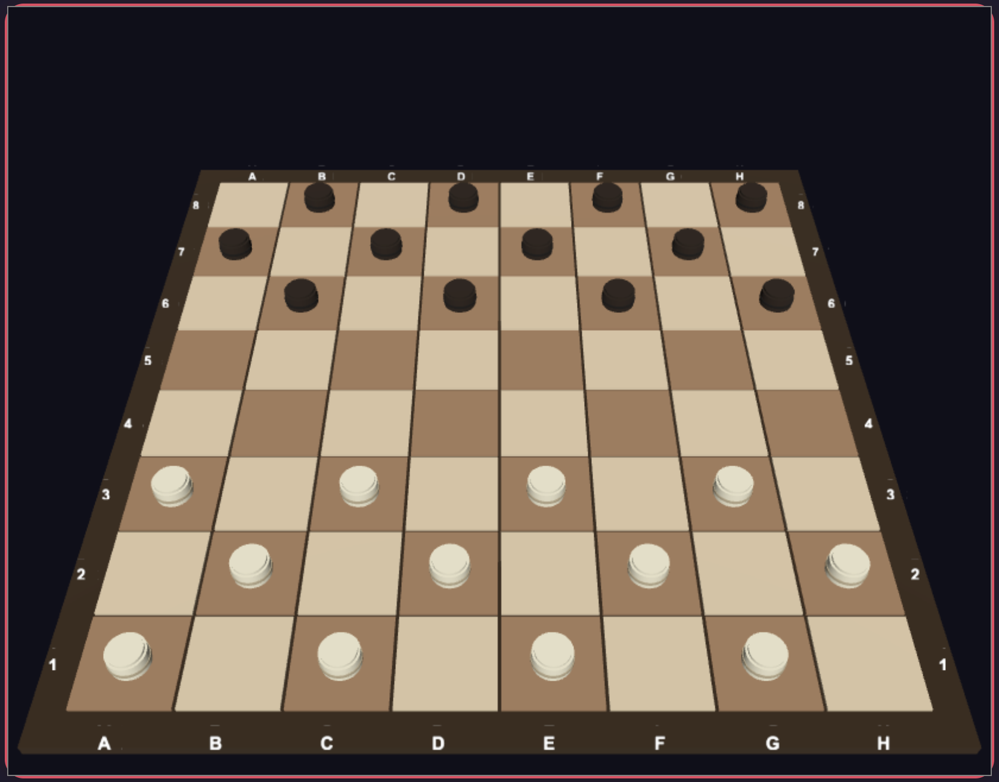

I. Урок
Шашки (или дама) е класическа настолна игра за двама играчи,
която се играе на дъска с 64 полета (8×8), подобна на шахматната. Всеки
играч започва с 12 пула (бели или черни), разположени на тъмните полета
от първите три реда на своята страна.

Основни правила
-
Движение: Пуловете се движат само диагонално напред,
по едно поле наведнъж.
-
Взимане: За да вземе противников пул, играчът
прескача диагонално над него на свободното поле зад него. Взетият пул
се премахва от дъската.
-
Верижно взимане: Ако след взимане има възможност за
ново взимане, играчът е длъжен да продължи да скача.
-
Дама (King): Когато пул достигне последния ред на
противника, той става "дама" и може да се движи и назад.
-
Победа: Играчът печели, когато противникът няма
повече пулове или не може да направи легален ход.
Стратегически съвети
- Контролирайте центъра на дъската
-
Защитавайте крайните пулове – те не могат да бъдат прескочени отзад
- Стремете се да създадете "дами" възможно най-рано
- Принуждавайте противника да прави неизгодни размени
II. Задачи
Използвайте интерактивното поле по-долу, за да решите следните задачи.
Всяка задача изисква практическо действие с мишката:
Задача №1: Преброяване на полетата
Инструкция: Завъртете дъската с мишката и преброете
колко тъмни полета са заети от пулове в началната позиция. Използвайте
координатите (A-H, 1-8) за ориентация.
Подсказка: Завъртете дъската за по-добър изглед.
Задача №2: Първи ход
Инструкция: Кликнете върху бял пул на позиция C3 и го
преместете диагонално напред. Колко зелени клетки се показват като
възможни ходове?
Подсказка: След като изберете пула, преброете подсветените
клетки.
Задача №3: Двойно прескачане
Инструкция: Играйте няколко хода и се опитайте да
създадете ситуация за верижно взимане (двойно прескачане). Червените
подсветки показват възможни скокове.
Подсказка: Вижте Стратегия 3 за
демонстрация.
Задача №4: Създаване на дама
Инструкция: Преместете бял пул до ред 8 (най-горния
ред). Наблюдавайте как пулът се трансформира визуално в дама с коронка.
След това пробвайте да я преместите назад.
Подсказка: Дамата може да се движи и в обратна посока.
IV. Решения
Покажи решението на Задача №1
Решение: В началната позиция са заети 24 полета – 12
с бели пулове и 12 с черни. Всички те са на тъмните (черни) полета на
дъската. Светлите полета никога не се използват при игра на шашки.
Покажи решението на Задача №2
Решение: Обикновен пул в центъра на дъската може да
направи максимум 2 различни хода (по диагонал напред-наляво и
напред-надясно). Ако има противникови пулове за прескачане, възможните
ходове могат да се увеличат.
Покажи решението на Задача №3
Решение: За двойно прескачане трябва да имате бял пул
и два черни пула, разположени по диагонал с празни полета между тях.
Например: бял пул на C3, черен на D4 (празно E5), черен на F6 (празно
G7). Белият може да скочи от C3 през D4 на E5, и след това през F6 на
G7.
Покажи решението на Задача №4
Решение: Дамата (King) се различава от обикновения
пул по това, че може да се движи и диагонално назад, не само напред. В
нашия модел дамата е представена като пул с коронка отгоре.